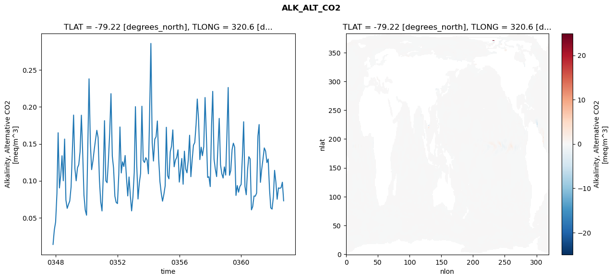
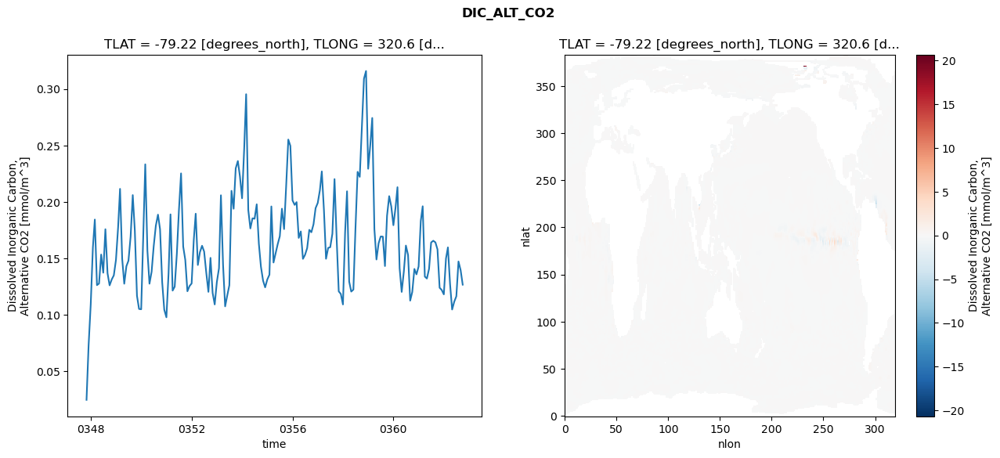
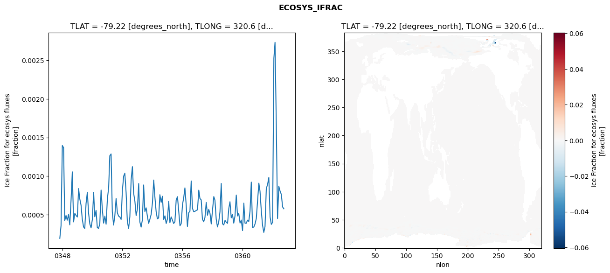
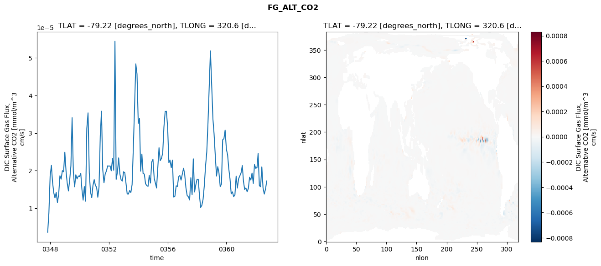

glb-dor_North_Atlantic_basin_023_1999-10-01_00095#
Simulation details#
Case: smyle.cdr-atlas-v0.glb-dor_North_Atlantic_basin_023_1999-10-01_00095.001
Basin: North_Atlantic_basin
Polygon: 23.0
Start date: 1999-10
Show code cell source Hide code cell source
import xarray as xr
import matplotlib.pyplot as plt
Show code cell source Hide code cell source
zarr_store = "/path/to/zarr/store"
# Parameters
zarr_store = "/global/cfs/projectdirs/m4746/Projects/Ocean-CDR-Atlas-v0/data/validation/smyle.cdr-atlas-v0.glb-dor_North_Atlantic_basin_023_1999-10-01_00095.001.validation.zarr"
Show code cell source Hide code cell source
%%time
ds_o = xr.open_zarr(zarr_store).compute()
ds_o
CPU times: user 661 ms, sys: 447 ms, total: 1.11 s
Wall time: 1.43 s
<xarray.Dataset> Size: 2MB
Dimensions: (nlat: 384, nlon: 320, time: 180)
Coordinates:
TLAT float64 8B -79.22
TLONG float64 8B 320.6
ULAT float64 8B -78.95
ULONG float64 8B 321.1
* time (time) object 1kB 0347-11-01 00:00:00 ... 0362-10-01 0...
z_t float32 4B 500.0
Dimensions without coordinates: nlat, nlon
Data variables:
ALK_ALT_CO2_diff (nlat, nlon) float32 492kB nan nan nan ... nan nan nan
ALK_ALT_CO2_rmse (time) float64 1kB 0.01387 0.03344 ... 0.09806 0.07291
DIC_ALT_CO2_diff (nlat, nlon) float32 492kB nan nan nan ... nan nan nan
DIC_ALT_CO2_rmse (time) float64 1kB 0.0246 0.07285 ... 0.1395 0.1266
ECOSYS_IFRAC_diff (nlat, nlon) float32 492kB nan nan nan ... nan nan nan
ECOSYS_IFRAC_rmse (time) float64 1kB 0.0001948 0.0003588 ... 0.0005774
FG_ALT_CO2_diff (nlat, nlon) float32 492kB nan nan nan ... nan nan nan
FG_ALT_CO2_rmse (time) float64 1kB 3.578e-06 8.699e-06 ... 1.722e-05xarray.Dataset
- nlat: 384
- nlon: 320
- time: 180
- TLAT()float64-79.22
- long_name :
- array of t-grid latitudes
- units :
- degrees_north
array(-79.22052261)
- TLONG()float64320.6
- long_name :
- array of t-grid longitudes
- units :
- degrees_east
array(320.56250892)
- ULAT()float64-78.95
- long_name :
- array of u-grid latitudes
- units :
- degrees_north
array(-78.95289509)
- ULONG()float64321.1
- long_name :
- array of u-grid longitudes
- units :
- degrees_east
array(321.12500894)
- time(time)object0347-11-01 00:00:00 ... 0362-10-...
- bounds :
- time_bound
- long_name :
- time
array([cftime.DatetimeNoLeap(347, 11, 1, 0, 0, 0, 0, has_year_zero=True), cftime.DatetimeNoLeap(347, 12, 1, 0, 0, 0, 0, has_year_zero=True), cftime.DatetimeNoLeap(348, 1, 1, 0, 0, 0, 0, has_year_zero=True), cftime.DatetimeNoLeap(348, 2, 1, 0, 0, 0, 0, has_year_zero=True), cftime.DatetimeNoLeap(348, 3, 1, 0, 0, 0, 0, has_year_zero=True), cftime.DatetimeNoLeap(348, 4, 1, 0, 0, 0, 0, has_year_zero=True), cftime.DatetimeNoLeap(348, 5, 1, 0, 0, 0, 0, has_year_zero=True), cftime.DatetimeNoLeap(348, 6, 1, 0, 0, 0, 0, has_year_zero=True), cftime.DatetimeNoLeap(348, 7, 1, 0, 0, 0, 0, has_year_zero=True), cftime.DatetimeNoLeap(348, 8, 1, 0, 0, 0, 0, has_year_zero=True), cftime.DatetimeNoLeap(348, 9, 1, 0, 0, 0, 0, has_year_zero=True), cftime.DatetimeNoLeap(348, 10, 1, 0, 0, 0, 0, has_year_zero=True), cftime.DatetimeNoLeap(348, 11, 1, 0, 0, 0, 0, has_year_zero=True), cftime.DatetimeNoLeap(348, 12, 1, 0, 0, 0, 0, has_year_zero=True), cftime.DatetimeNoLeap(349, 1, 1, 0, 0, 0, 0, has_year_zero=True), cftime.DatetimeNoLeap(349, 2, 1, 0, 0, 0, 0, has_year_zero=True), cftime.DatetimeNoLeap(349, 3, 1, 0, 0, 0, 0, has_year_zero=True), cftime.DatetimeNoLeap(349, 4, 1, 0, 0, 0, 0, has_year_zero=True), cftime.DatetimeNoLeap(349, 5, 1, 0, 0, 0, 0, has_year_zero=True), cftime.DatetimeNoLeap(349, 6, 1, 0, 0, 0, 0, has_year_zero=True), cftime.DatetimeNoLeap(349, 7, 1, 0, 0, 0, 0, has_year_zero=True), cftime.DatetimeNoLeap(349, 8, 1, 0, 0, 0, 0, has_year_zero=True), cftime.DatetimeNoLeap(349, 9, 1, 0, 0, 0, 0, has_year_zero=True), cftime.DatetimeNoLeap(349, 10, 1, 0, 0, 0, 0, has_year_zero=True), cftime.DatetimeNoLeap(349, 11, 1, 0, 0, 0, 0, has_year_zero=True), cftime.DatetimeNoLeap(349, 12, 1, 0, 0, 0, 0, has_year_zero=True), cftime.DatetimeNoLeap(350, 1, 1, 0, 0, 0, 0, has_year_zero=True), cftime.DatetimeNoLeap(350, 2, 1, 0, 0, 0, 0, has_year_zero=True), cftime.DatetimeNoLeap(350, 3, 1, 0, 0, 0, 0, has_year_zero=True), cftime.DatetimeNoLeap(350, 4, 1, 0, 0, 0, 0, has_year_zero=True), cftime.DatetimeNoLeap(350, 5, 1, 0, 0, 0, 0, has_year_zero=True), cftime.DatetimeNoLeap(350, 6, 1, 0, 0, 0, 0, has_year_zero=True), cftime.DatetimeNoLeap(350, 7, 1, 0, 0, 0, 0, has_year_zero=True), cftime.DatetimeNoLeap(350, 8, 1, 0, 0, 0, 0, has_year_zero=True), cftime.DatetimeNoLeap(350, 9, 1, 0, 0, 0, 0, has_year_zero=True), cftime.DatetimeNoLeap(350, 10, 1, 0, 0, 0, 0, has_year_zero=True), cftime.DatetimeNoLeap(350, 11, 1, 0, 0, 0, 0, has_year_zero=True), cftime.DatetimeNoLeap(350, 12, 1, 0, 0, 0, 0, has_year_zero=True), cftime.DatetimeNoLeap(351, 1, 1, 0, 0, 0, 0, has_year_zero=True), cftime.DatetimeNoLeap(351, 2, 1, 0, 0, 0, 0, has_year_zero=True), cftime.DatetimeNoLeap(351, 3, 1, 0, 0, 0, 0, has_year_zero=True), cftime.DatetimeNoLeap(351, 4, 1, 0, 0, 0, 0, has_year_zero=True), cftime.DatetimeNoLeap(351, 5, 1, 0, 0, 0, 0, has_year_zero=True), cftime.DatetimeNoLeap(351, 6, 1, 0, 0, 0, 0, has_year_zero=True), cftime.DatetimeNoLeap(351, 7, 1, 0, 0, 0, 0, has_year_zero=True), cftime.DatetimeNoLeap(351, 8, 1, 0, 0, 0, 0, has_year_zero=True), cftime.DatetimeNoLeap(351, 9, 1, 0, 0, 0, 0, has_year_zero=True), cftime.DatetimeNoLeap(351, 10, 1, 0, 0, 0, 0, has_year_zero=True), cftime.DatetimeNoLeap(351, 11, 1, 0, 0, 0, 0, has_year_zero=True), cftime.DatetimeNoLeap(351, 12, 1, 0, 0, 0, 0, has_year_zero=True), cftime.DatetimeNoLeap(352, 1, 1, 0, 0, 0, 0, has_year_zero=True), cftime.DatetimeNoLeap(352, 2, 1, 0, 0, 0, 0, has_year_zero=True), cftime.DatetimeNoLeap(352, 3, 1, 0, 0, 0, 0, has_year_zero=True), cftime.DatetimeNoLeap(352, 4, 1, 0, 0, 0, 0, has_year_zero=True), cftime.DatetimeNoLeap(352, 5, 1, 0, 0, 0, 0, has_year_zero=True), cftime.DatetimeNoLeap(352, 6, 1, 0, 0, 0, 0, has_year_zero=True), cftime.DatetimeNoLeap(352, 7, 1, 0, 0, 0, 0, has_year_zero=True), cftime.DatetimeNoLeap(352, 8, 1, 0, 0, 0, 0, has_year_zero=True), cftime.DatetimeNoLeap(352, 9, 1, 0, 0, 0, 0, has_year_zero=True), cftime.DatetimeNoLeap(352, 10, 1, 0, 0, 0, 0, has_year_zero=True), cftime.DatetimeNoLeap(352, 11, 1, 0, 0, 0, 0, has_year_zero=True), cftime.DatetimeNoLeap(352, 12, 1, 0, 0, 0, 0, has_year_zero=True), cftime.DatetimeNoLeap(353, 1, 1, 0, 0, 0, 0, has_year_zero=True), cftime.DatetimeNoLeap(353, 2, 1, 0, 0, 0, 0, has_year_zero=True), cftime.DatetimeNoLeap(353, 3, 1, 0, 0, 0, 0, has_year_zero=True), cftime.DatetimeNoLeap(353, 4, 1, 0, 0, 0, 0, has_year_zero=True), cftime.DatetimeNoLeap(353, 5, 1, 0, 0, 0, 0, has_year_zero=True), cftime.DatetimeNoLeap(353, 6, 1, 0, 0, 0, 0, has_year_zero=True), cftime.DatetimeNoLeap(353, 7, 1, 0, 0, 0, 0, has_year_zero=True), cftime.DatetimeNoLeap(353, 8, 1, 0, 0, 0, 0, has_year_zero=True), cftime.DatetimeNoLeap(353, 9, 1, 0, 0, 0, 0, has_year_zero=True), cftime.DatetimeNoLeap(353, 10, 1, 0, 0, 0, 0, has_year_zero=True), cftime.DatetimeNoLeap(353, 11, 1, 0, 0, 0, 0, has_year_zero=True), cftime.DatetimeNoLeap(353, 12, 1, 0, 0, 0, 0, has_year_zero=True), cftime.DatetimeNoLeap(354, 1, 1, 0, 0, 0, 0, has_year_zero=True), cftime.DatetimeNoLeap(354, 2, 1, 0, 0, 0, 0, has_year_zero=True), cftime.DatetimeNoLeap(354, 3, 1, 0, 0, 0, 0, has_year_zero=True), cftime.DatetimeNoLeap(354, 4, 1, 0, 0, 0, 0, has_year_zero=True), cftime.DatetimeNoLeap(354, 5, 1, 0, 0, 0, 0, has_year_zero=True), cftime.DatetimeNoLeap(354, 6, 1, 0, 0, 0, 0, has_year_zero=True), cftime.DatetimeNoLeap(354, 7, 1, 0, 0, 0, 0, has_year_zero=True), cftime.DatetimeNoLeap(354, 8, 1, 0, 0, 0, 0, has_year_zero=True), cftime.DatetimeNoLeap(354, 9, 1, 0, 0, 0, 0, has_year_zero=True), cftime.DatetimeNoLeap(354, 10, 1, 0, 0, 0, 0, has_year_zero=True), cftime.DatetimeNoLeap(354, 11, 1, 0, 0, 0, 0, has_year_zero=True), cftime.DatetimeNoLeap(354, 12, 1, 0, 0, 0, 0, has_year_zero=True), cftime.DatetimeNoLeap(355, 1, 1, 0, 0, 0, 0, has_year_zero=True), cftime.DatetimeNoLeap(355, 2, 1, 0, 0, 0, 0, has_year_zero=True), cftime.DatetimeNoLeap(355, 3, 1, 0, 0, 0, 0, has_year_zero=True), cftime.DatetimeNoLeap(355, 4, 1, 0, 0, 0, 0, has_year_zero=True), cftime.DatetimeNoLeap(355, 5, 1, 0, 0, 0, 0, has_year_zero=True), cftime.DatetimeNoLeap(355, 6, 1, 0, 0, 0, 0, has_year_zero=True), cftime.DatetimeNoLeap(355, 7, 1, 0, 0, 0, 0, has_year_zero=True), cftime.DatetimeNoLeap(355, 8, 1, 0, 0, 0, 0, has_year_zero=True), cftime.DatetimeNoLeap(355, 9, 1, 0, 0, 0, 0, has_year_zero=True), cftime.DatetimeNoLeap(355, 10, 1, 0, 0, 0, 0, has_year_zero=True), cftime.DatetimeNoLeap(355, 11, 1, 0, 0, 0, 0, has_year_zero=True), cftime.DatetimeNoLeap(355, 12, 1, 0, 0, 0, 0, has_year_zero=True), cftime.DatetimeNoLeap(356, 1, 1, 0, 0, 0, 0, has_year_zero=True), cftime.DatetimeNoLeap(356, 2, 1, 0, 0, 0, 0, has_year_zero=True), cftime.DatetimeNoLeap(356, 3, 1, 0, 0, 0, 0, has_year_zero=True), cftime.DatetimeNoLeap(356, 4, 1, 0, 0, 0, 0, has_year_zero=True), cftime.DatetimeNoLeap(356, 5, 1, 0, 0, 0, 0, has_year_zero=True), cftime.DatetimeNoLeap(356, 6, 1, 0, 0, 0, 0, has_year_zero=True), cftime.DatetimeNoLeap(356, 7, 1, 0, 0, 0, 0, has_year_zero=True), cftime.DatetimeNoLeap(356, 8, 1, 0, 0, 0, 0, has_year_zero=True), cftime.DatetimeNoLeap(356, 9, 1, 0, 0, 0, 0, has_year_zero=True), cftime.DatetimeNoLeap(356, 10, 1, 0, 0, 0, 0, has_year_zero=True), cftime.DatetimeNoLeap(356, 11, 1, 0, 0, 0, 0, has_year_zero=True), cftime.DatetimeNoLeap(356, 12, 1, 0, 0, 0, 0, has_year_zero=True), cftime.DatetimeNoLeap(357, 1, 1, 0, 0, 0, 0, has_year_zero=True), cftime.DatetimeNoLeap(357, 2, 1, 0, 0, 0, 0, has_year_zero=True), cftime.DatetimeNoLeap(357, 3, 1, 0, 0, 0, 0, has_year_zero=True), cftime.DatetimeNoLeap(357, 4, 1, 0, 0, 0, 0, has_year_zero=True), cftime.DatetimeNoLeap(357, 5, 1, 0, 0, 0, 0, has_year_zero=True), cftime.DatetimeNoLeap(357, 6, 1, 0, 0, 0, 0, has_year_zero=True), cftime.DatetimeNoLeap(357, 7, 1, 0, 0, 0, 0, has_year_zero=True), cftime.DatetimeNoLeap(357, 8, 1, 0, 0, 0, 0, has_year_zero=True), cftime.DatetimeNoLeap(357, 9, 1, 0, 0, 0, 0, has_year_zero=True), cftime.DatetimeNoLeap(357, 10, 1, 0, 0, 0, 0, has_year_zero=True), cftime.DatetimeNoLeap(357, 11, 1, 0, 0, 0, 0, has_year_zero=True), cftime.DatetimeNoLeap(357, 12, 1, 0, 0, 0, 0, has_year_zero=True), cftime.DatetimeNoLeap(358, 1, 1, 0, 0, 0, 0, has_year_zero=True), cftime.DatetimeNoLeap(358, 2, 1, 0, 0, 0, 0, has_year_zero=True), cftime.DatetimeNoLeap(358, 3, 1, 0, 0, 0, 0, has_year_zero=True), cftime.DatetimeNoLeap(358, 4, 1, 0, 0, 0, 0, has_year_zero=True), cftime.DatetimeNoLeap(358, 5, 1, 0, 0, 0, 0, has_year_zero=True), cftime.DatetimeNoLeap(358, 6, 1, 0, 0, 0, 0, has_year_zero=True), cftime.DatetimeNoLeap(358, 7, 1, 0, 0, 0, 0, has_year_zero=True), cftime.DatetimeNoLeap(358, 8, 1, 0, 0, 0, 0, has_year_zero=True), cftime.DatetimeNoLeap(358, 9, 1, 0, 0, 0, 0, has_year_zero=True), cftime.DatetimeNoLeap(358, 10, 1, 0, 0, 0, 0, has_year_zero=True), cftime.DatetimeNoLeap(358, 11, 1, 0, 0, 0, 0, has_year_zero=True), cftime.DatetimeNoLeap(358, 12, 1, 0, 0, 0, 0, has_year_zero=True), cftime.DatetimeNoLeap(359, 1, 1, 0, 0, 0, 0, has_year_zero=True), cftime.DatetimeNoLeap(359, 2, 1, 0, 0, 0, 0, has_year_zero=True), cftime.DatetimeNoLeap(359, 3, 1, 0, 0, 0, 0, has_year_zero=True), cftime.DatetimeNoLeap(359, 4, 1, 0, 0, 0, 0, has_year_zero=True), cftime.DatetimeNoLeap(359, 5, 1, 0, 0, 0, 0, has_year_zero=True), cftime.DatetimeNoLeap(359, 6, 1, 0, 0, 0, 0, has_year_zero=True), cftime.DatetimeNoLeap(359, 7, 1, 0, 0, 0, 0, has_year_zero=True), cftime.DatetimeNoLeap(359, 8, 1, 0, 0, 0, 0, has_year_zero=True), cftime.DatetimeNoLeap(359, 9, 1, 0, 0, 0, 0, has_year_zero=True), cftime.DatetimeNoLeap(359, 10, 1, 0, 0, 0, 0, has_year_zero=True), cftime.DatetimeNoLeap(359, 11, 1, 0, 0, 0, 0, has_year_zero=True), cftime.DatetimeNoLeap(359, 12, 1, 0, 0, 0, 0, has_year_zero=True), cftime.DatetimeNoLeap(360, 1, 1, 0, 0, 0, 0, has_year_zero=True), cftime.DatetimeNoLeap(360, 2, 1, 0, 0, 0, 0, has_year_zero=True), cftime.DatetimeNoLeap(360, 3, 1, 0, 0, 0, 0, has_year_zero=True), cftime.DatetimeNoLeap(360, 4, 1, 0, 0, 0, 0, has_year_zero=True), cftime.DatetimeNoLeap(360, 5, 1, 0, 0, 0, 0, has_year_zero=True), cftime.DatetimeNoLeap(360, 6, 1, 0, 0, 0, 0, has_year_zero=True), cftime.DatetimeNoLeap(360, 7, 1, 0, 0, 0, 0, has_year_zero=True), cftime.DatetimeNoLeap(360, 8, 1, 0, 0, 0, 0, has_year_zero=True), cftime.DatetimeNoLeap(360, 9, 1, 0, 0, 0, 0, has_year_zero=True), cftime.DatetimeNoLeap(360, 10, 1, 0, 0, 0, 0, has_year_zero=True), cftime.DatetimeNoLeap(360, 11, 1, 0, 0, 0, 0, has_year_zero=True), cftime.DatetimeNoLeap(360, 12, 1, 0, 0, 0, 0, has_year_zero=True), cftime.DatetimeNoLeap(361, 1, 1, 0, 0, 0, 0, has_year_zero=True), cftime.DatetimeNoLeap(361, 2, 1, 0, 0, 0, 0, has_year_zero=True), cftime.DatetimeNoLeap(361, 3, 1, 0, 0, 0, 0, has_year_zero=True), cftime.DatetimeNoLeap(361, 4, 1, 0, 0, 0, 0, has_year_zero=True), cftime.DatetimeNoLeap(361, 5, 1, 0, 0, 0, 0, has_year_zero=True), cftime.DatetimeNoLeap(361, 6, 1, 0, 0, 0, 0, has_year_zero=True), cftime.DatetimeNoLeap(361, 7, 1, 0, 0, 0, 0, has_year_zero=True), cftime.DatetimeNoLeap(361, 8, 1, 0, 0, 0, 0, has_year_zero=True), cftime.DatetimeNoLeap(361, 9, 1, 0, 0, 0, 0, has_year_zero=True), cftime.DatetimeNoLeap(361, 10, 1, 0, 0, 0, 0, has_year_zero=True), cftime.DatetimeNoLeap(361, 11, 1, 0, 0, 0, 0, has_year_zero=True), cftime.DatetimeNoLeap(361, 12, 1, 0, 0, 0, 0, has_year_zero=True), cftime.DatetimeNoLeap(362, 1, 1, 0, 0, 0, 0, has_year_zero=True), cftime.DatetimeNoLeap(362, 2, 1, 0, 0, 0, 0, has_year_zero=True), cftime.DatetimeNoLeap(362, 3, 1, 0, 0, 0, 0, has_year_zero=True), cftime.DatetimeNoLeap(362, 4, 1, 0, 0, 0, 0, has_year_zero=True), cftime.DatetimeNoLeap(362, 5, 1, 0, 0, 0, 0, has_year_zero=True), cftime.DatetimeNoLeap(362, 6, 1, 0, 0, 0, 0, has_year_zero=True), cftime.DatetimeNoLeap(362, 7, 1, 0, 0, 0, 0, has_year_zero=True), cftime.DatetimeNoLeap(362, 8, 1, 0, 0, 0, 0, has_year_zero=True), cftime.DatetimeNoLeap(362, 9, 1, 0, 0, 0, 0, has_year_zero=True), cftime.DatetimeNoLeap(362, 10, 1, 0, 0, 0, 0, has_year_zero=True)], dtype=object) - z_t()float32500.0
- long_name :
- depth from surface to midpoint of layer
- positive :
- down
- units :
- centimeters
- valid_max :
- 537500.0
- valid_min :
- 500.0
array(500., dtype=float32)
- ALK_ALT_CO2_diff(nlat, nlon)float32nan nan nan nan ... nan nan nan nan
- cell_methods :
- time: mean
- grid_loc :
- 3111
- long_name :
- Alkalinity, Alternative CO2
- units :
- meq/m^3
array([[ nan, nan, nan, ..., nan, nan, nan], [ nan, nan, nan, ..., nan, nan, nan], [0.0168457 , 0.05493164, 0.01098633, ..., nan, nan, nan], ..., [ nan, nan, nan, ..., nan, nan, nan], [ nan, nan, nan, ..., nan, nan, nan], [ nan, nan, nan, ..., nan, nan, nan]], dtype=float32) - ALK_ALT_CO2_rmse(time)float640.01387 0.03344 ... 0.09806 0.07291
- cell_methods :
- time: mean
- grid_loc :
- 3111
- long_name :
- Alkalinity, Alternative CO2
- units :
- meq/m^3
array([0.01387463, 0.03343865, 0.04438191, 0.08294561, 0.16500387, 0.09031408, 0.10725529, 0.13389829, 0.10001457, 0.15647094, 0.07387412, 0.06271966, 0.06821117, 0.07264506, 0.09166127, 0.14178397, 0.18891952, 0.11648189, 0.099981 , 0.11761153, 0.12176442, 0.13924114, 0.18874257, 0.13963619, 0.08059665, 0.06051572, 0.05343963, 0.15092802, 0.2379616 , 0.15113933, 0.11509019, 0.12687924, 0.14176838, 0.15557461, 0.16828074, 0.15842749, 0.10158227, 0.07170666, 0.05919072, 0.10849133, 0.18135191, 0.10005134, 0.09740829, 0.12752905, 0.163977 , 0.2178673 , 0.13351761, 0.11702383, 0.07913027, 0.07076144, 0.06919197, 0.1086067 , 0.17280929, 0.11057759, 0.12570383, 0.11929081, 0.13419425, 0.10452144, 0.07950872, 0.10518243, 0.07978301, 0.05927247, 0.07806226, 0.11127291, 0.20031184, 0.12117143, 0.07535677, 0.09706601, 0.10989447, 0.20086833, 0.12750542, 0.12472313, 0.13123635, 0.12799792, 0.10943193, 0.19672968, 0.28584097, 0.15151011, 0.12669959, 0.156314 , 0.1594645 , 0.18094314, 0.12945461, 0.09876138, 0.08296606, 0.07239861, 0.08141283, 0.0931973 , 0.17239848, 0.10681386, 0.10265349, 0.13918516, 0.14676149, 0.1688577 , 0.11898557, 0.12784608, 0.1316048 , 0.14186864, 0.09823233, 0.11534899, 0.13021146, 0.0953466 , 0.1400667 , 0.11591182, 0.1107795 , 0.12830335, 0.1616254 , 0.10555292, 0.12845194, 0.14807619, 0.15177483, 0.1762512 , 0.21059738, 0.181955 , 0.12865846, 0.14542035, 0.13394343, 0.14602863, 0.21266961, 0.16297082, 0.10452804, 0.10544633, 0.09216542, 0.17440656, 0.22101 , 0.12928146, 0.11587397, 0.10567595, 0.14527158, 0.18441837, 0.12170321, 0.10958026, 0.10373856, 0.11877171, 0.10773848, 0.1660882 , 0.22622755, 0.10743803, 0.1138644 , 0.14221026, 0.15086374, 0.14545004, 0.08021102, 0.09359598, 0.08453344, 0.09226545, 0.09505215, 0.13503505, 0.17987654, 0.09228627, 0.08112726, 0.1146684 , 0.13260047, 0.12969467, 0.06068423, 0.06512392, 0.07944808, 0.07916635, 0.08334654, 0.16057197, 0.1760927 , 0.09789194, 0.11550597, 0.12949013, 0.14445392, 0.14017907, 0.12461028, 0.12943962, 0.08931918, 0.06338259, 0.06169461, 0.07834604, 0.11413906, 0.09824059, 0.07504795, 0.09038837, 0.08987334, 0.09055991, 0.09805566, 0.0729123 ]) - DIC_ALT_CO2_diff(nlat, nlon)float32nan nan nan nan ... nan nan nan nan
- cell_methods :
- time: mean
- grid_loc :
- 3111
- long_name :
- Dissolved Inorganic Carbon, Alternative CO2
- units :
- mmol/m^3
array([[ nan, nan, nan, ..., nan, nan, nan], [ nan, nan, nan, ..., nan, nan, nan], [0.00537109, 0.04321289, 0.00073242, ..., nan, nan, nan], ..., [ nan, nan, nan, ..., nan, nan, nan], [ nan, nan, nan, ..., nan, nan, nan], [ nan, nan, nan, ..., nan, nan, nan]], dtype=float32) - DIC_ALT_CO2_rmse(time)float640.0246 0.07285 ... 0.1395 0.1266
- cell_methods :
- time: mean
- grid_loc :
- 3111
- long_name :
- Dissolved Inorganic Carbon, Alternative CO2
- units :
- mmol/m^3
array([0.02459985, 0.07284804, 0.10947735, 0.15967689, 0.18433319, 0.1262217 , 0.12764443, 0.15332469, 0.13724071, 0.17577114, 0.13676488, 0.12604068, 0.13129058, 0.13489688, 0.14865048, 0.1774455 , 0.21152982, 0.14954606, 0.12749899, 0.14300211, 0.14790771, 0.16924622, 0.20601367, 0.17446746, 0.11679001, 0.10514255, 0.10484069, 0.1713052 , 0.2332598 , 0.15680118, 0.1275106 , 0.13812826, 0.16058669, 0.17892241, 0.18865812, 0.1757387 , 0.12875554, 0.10444588, 0.09775703, 0.13634445, 0.188927 , 0.12138292, 0.12484612, 0.15392041, 0.19240642, 0.22523427, 0.16040573, 0.14865898, 0.12079759, 0.12534769, 0.12772691, 0.16619653, 0.18951862, 0.14407366, 0.15543382, 0.16112378, 0.15598209, 0.13715362, 0.12028115, 0.15038486, 0.11932976, 0.10912428, 0.12896991, 0.14122375, 0.2058483 , 0.14395838, 0.10743851, 0.11718613, 0.12615632, 0.20977349, 0.19393338, 0.22970844, 0.23619853, 0.22261022, 0.20319176, 0.24771973, 0.29538613, 0.19270179, 0.17647761, 0.18544004, 0.18506919, 0.19783411, 0.16292285, 0.14254711, 0.1301886 , 0.12427638, 0.13118976, 0.13546294, 0.19595528, 0.14628173, 0.15415242, 0.16258873, 0.16952384, 0.19394059, 0.17589014, 0.21390619, 0.25523348, 0.24963686, 0.20133546, 0.19732655, 0.19979588, 0.16806704, 0.17382201, 0.14951901, 0.15300936, 0.15900217, 0.1752326 , 0.17310484, 0.18017519, 0.19446693, 0.19901221, 0.21019616, 0.22695914, 0.19245752, 0.14960393, 0.15922073, 0.15984326, 0.17175894, 0.22017968, 0.16867738, 0.12072288, 0.11841181, 0.10911865, 0.17298201, 0.20938568, 0.12935881, 0.12051878, 0.12227258, 0.17616168, 0.22661192, 0.2221604 , 0.26523669, 0.30913549, 0.31592421, 0.22933444, 0.25065695, 0.2743328 , 0.17581384, 0.14895904, 0.16328315, 0.16931153, 0.16921882, 0.14313639, 0.18772229, 0.20505713, 0.19610805, 0.17932721, 0.19497196, 0.21300402, 0.1412193 , 0.12022845, 0.13816283, 0.16128008, 0.1530333 , 0.1125171 , 0.12008677, 0.14059881, 0.13577915, 0.14278184, 0.18296001, 0.19610677, 0.13381082, 0.13208716, 0.14066987, 0.16402786, 0.16555292, 0.16413871, 0.15793011, 0.123907 , 0.12195885, 0.11804914, 0.14984861, 0.15966555, 0.12712688, 0.10462577, 0.11161815, 0.1163399 , 0.1471923 , 0.13950174, 0.12664719]) - ECOSYS_IFRAC_diff(nlat, nlon)float32nan nan nan nan ... nan nan nan nan
- cell_methods :
- time: mean
- grid_loc :
- 2110
- long_name :
- Ice Fraction for ecosys fluxes
- units :
- fraction
array([[ nan, nan, nan, ..., nan, nan, nan], [ nan, nan, nan, ..., nan, nan, nan], [1.7881393e-06, 4.1127205e-06, 8.5830688e-06, ..., nan, nan, nan], ..., [ nan, nan, nan, ..., nan, nan, nan], [ nan, nan, nan, ..., nan, nan, nan], [ nan, nan, nan, ..., nan, nan, nan]], dtype=float32) - ECOSYS_IFRAC_rmse(time)float640.0001948 0.0003588 ... 0.0005774
- cell_methods :
- time: mean
- grid_loc :
- 2110
- long_name :
- Ice Fraction for ecosys fluxes
- units :
- fraction
array([0.00019475, 0.00035885, 0.00139599, 0.00136869, 0.00042408, 0.00049084, 0.00043003, 0.0005025 , 0.00036905, 0.00068578, 0.00105513, 0.00040787, 0.00051723, 0.00049092, 0.0004709 , 0.00083875, 0.00070586, 0.00062397, 0.00044366, 0.00034263, 0.00032143, 0.00064641, 0.00079111, 0.00052026, 0.00037935, 0.00033045, 0.00043879, 0.00078821, 0.00047393, 0.00055626, 0.00033518, 0.00032271, 0.00038355, 0.00082032, 0.00056508, 0.00039188, 0.00048184, 0.00037752, 0.00070406, 0.00085205, 0.00126384, 0.00128697, 0.00053522, 0.00036679, 0.0004874 , 0.00071038, 0.00052419, 0.00048235, 0.00047047, 0.00043959, 0.00081948, 0.00100009, 0.0010374 , 0.0007885 , 0.00041549, 0.00032182, 0.00047535, 0.00095005, 0.0011225 , 0.00077952, 0.00067324, 0.00048972, 0.00057521, 0.00090318, 0.000408 , 0.00033995, 0.00043318, 0.00088568, 0.00054174, 0.00058977, 0.0004772 , 0.00038855, 0.0004443 , 0.00050551, 0.00065183, 0.00094907, 0.0007338 , 0.00054005, 0.00044661, 0.00045916, 0.00075931, 0.00066046, 0.00073881, 0.00043831, 0.00048618, 0.00038678, 0.00044565, 0.00067228, 0.00039696, 0.00047241, 0.00043122, 0.00038655, 0.00040985, 0.00069156, 0.00073365, 0.00054872, 0.00035734, 0.00038458, 0.00062899, 0.00072525, 0.00084755, 0.00062706, 0.00034902, 0.00052609, 0.00054462, 0.00093733, 0.00058196, 0.00053941, 0.00054461, 0.00055566, 0.00056407, 0.00081858, 0.00071078, 0.00069209, 0.00044196, 0.00040923, 0.00046449, 0.00065951, 0.00049381, 0.00056915, 0.00051655, 0.0003808 , 0.00056257, 0.00073502, 0.00068798, 0.0004415 , 0.000342 , 0.00040798, 0.00053809, 0.00090464, 0.00038249, 0.00036802, 0.00042725, 0.00040257, 0.0003888 , 0.00058237, 0.00066838, 0.00046016, 0.00050464, 0.00039146, 0.00048482, 0.00075444, 0.00048425, 0.00051587, 0.00039244, 0.00043116, 0.00029537, 0.00065031, 0.00039113, 0.00038991, 0.0004301 , 0.00041295, 0.00054526, 0.00092284, 0.00033716, 0.00034061, 0.00038225, 0.0004519 , 0.00068416, 0.00090871, 0.00080381, 0.00055249, 0.00036673, 0.00027168, 0.00034915, 0.00083945, 0.0008928 , 0.0009824 , 0.00047076, 0.00037547, 0.00040166, 0.0025259 , 0.00273155, 0.00165916, 0.000452 , 0.00087001, 0.0008071 , 0.00076286, 0.00060086, 0.00057735]) - FG_ALT_CO2_diff(nlat, nlon)float32nan nan nan nan ... nan nan nan nan
- cell_methods :
- time: mean
- grid_loc :
- 2110
- long_name :
- DIC Surface Gas Flux, Alternative CO2
- units :
- mmol/m^3 cm/s
array([[ nan, nan, nan, ..., nan, nan, nan], [ nan, nan, nan, ..., nan, nan, nan], [8.3829264e-09, 1.2840928e-08, 7.1204918e-09, ..., nan, nan, nan], ..., [ nan, nan, nan, ..., nan, nan, nan], [ nan, nan, nan, ..., nan, nan, nan], [ nan, nan, nan, ..., nan, nan, nan]], dtype=float32) - FG_ALT_CO2_rmse(time)float643.578e-06 8.699e-06 ... 1.722e-05
- cell_methods :
- time: mean
- grid_loc :
- 2110
- long_name :
- DIC Surface Gas Flux, Alternative CO2
- units :
- mmol/m^3 cm/s
array([3.57822089e-06, 8.69861488e-06, 1.85173791e-05, 2.13777720e-05, 1.70021339e-05, 1.41044989e-05, 1.27055026e-05, 1.41927774e-05, 1.15109326e-05, 1.36221856e-05, 1.86103692e-05, 1.77173884e-05, 1.99901710e-05, 1.96498717e-05, 2.48950549e-05, 1.97292645e-05, 1.66886706e-05, 1.45731123e-05, 1.74031351e-05, 2.12853810e-05, 3.40698490e-05, 1.96423336e-05, 1.56431669e-05, 1.88865506e-05, 1.77746500e-05, 1.85401005e-05, 1.84217758e-05, 1.92401851e-05, 1.50834328e-05, 1.21370937e-05, 1.57368461e-05, 1.18391980e-05, 3.11847979e-05, 3.53591358e-05, 1.93882130e-05, 1.42976666e-05, 1.27901711e-05, 1.60069078e-05, 1.75979913e-05, 1.59771902e-05, 1.56142301e-05, 1.28947934e-05, 1.56234896e-05, 2.92285235e-05, 3.58039635e-05, 2.02858008e-05, 1.67239656e-05, 1.90901409e-05, 1.98856035e-05, 2.12434934e-05, 2.11691075e-05, 2.12152082e-05, 1.99336350e-05, 2.32371429e-05, 2.00797420e-05, 5.44360360e-05, 1.76610363e-05, 1.95918411e-05, 2.33792249e-05, 1.91193518e-05, 1.75468351e-05, 1.71986904e-05, 1.96689162e-05, 1.93973738e-05, 1.66835487e-05, 1.37842319e-05, 1.37551379e-05, 1.46805138e-05, 1.41457945e-05, 1.62760837e-05, 2.62034958e-05, 3.68949828e-05, 4.84135241e-05, 4.57107316e-05, 3.25782765e-05, 3.38598234e-05, 1.98330954e-05, 2.43932850e-05, 1.92211793e-05, 1.90714984e-05, ... 2.27803590e-05, 2.07533674e-05, 2.27579917e-05, 1.29383162e-05, 1.31512824e-05, 1.59363024e-05, 1.57728442e-05, 1.83451790e-05, 1.86860491e-05, 1.74620518e-05, 1.90291929e-05, 2.06404592e-05, 1.89759604e-05, 1.53940542e-05, 1.33606497e-05, 1.30204314e-05, 1.21814485e-05, 1.80822560e-05, 1.35759561e-05, 2.31251524e-05, 1.42870626e-05, 1.60847307e-05, 1.76339489e-05, 1.76787176e-05, 1.36622193e-05, 1.01756309e-05, 1.07237137e-05, 1.23463692e-05, 1.59141646e-05, 2.11434240e-05, 2.49479550e-05, 3.27134580e-05, 4.24058366e-05, 5.18622001e-05, 4.25952163e-05, 3.36765901e-05, 2.98191018e-05, 2.38417050e-05, 1.85262020e-05, 2.10190554e-05, 1.93911788e-05, 1.57224915e-05, 1.64110532e-05, 2.82048600e-05, 2.84927746e-05, 3.07563033e-05, 2.57109226e-05, 2.41458292e-05, 2.05801062e-05, 1.78080668e-05, 1.37929325e-05, 1.43153016e-05, 1.30578104e-05, 1.34925609e-05, 1.85060125e-05, 1.53457184e-05, 1.78042288e-05, 1.85828555e-05, 1.93818642e-05, 2.13351033e-05, 1.72030957e-05, 1.49377366e-05, 1.53611461e-05, 1.43751948e-05, 1.52298383e-05, 1.82306127e-05, 1.74905573e-05, 1.93415714e-05, 1.65918840e-05, 2.16045833e-05, 2.05966680e-05, 2.08011710e-05, 2.45726191e-05, 1.59878390e-05, 1.56782177e-05, 2.09709855e-05, 1.53767480e-05, 1.37476360e-05, 1.50608206e-05, 1.72204467e-05])
- timePandasIndex
PandasIndex(CFTimeIndex([0347-11-01 00:00:00, 0347-12-01 00:00:00, 0348-01-01 00:00:00, 0348-02-01 00:00:00, 0348-03-01 00:00:00, 0348-04-01 00:00:00, 0348-05-01 00:00:00, 0348-06-01 00:00:00, 0348-07-01 00:00:00, 0348-08-01 00:00:00, ... 0362-01-01 00:00:00, 0362-02-01 00:00:00, 0362-03-01 00:00:00, 0362-04-01 00:00:00, 0362-05-01 00:00:00, 0362-06-01 00:00:00, 0362-07-01 00:00:00, 0362-08-01 00:00:00, 0362-09-01 00:00:00, 0362-10-01 00:00:00], dtype='object', length=180, calendar='noleap', freq='MS'))
Show code cell source Hide code cell source
variables = [v[:-5] for v in ds_o.variables if "_rmse" in v]
Show code cell source Hide code cell source
plt.rcParams.update({'figure.max_open_warning': 0})
for v in variables:
fig, axs = plt.subplots(1, 2, figsize=(15, 6))
ds_o[f"{v}_rmse"].plot(ax=axs[0])
ds_o[f"{v}_diff"].plot(ax=axs[1])
plt.suptitle(v, fontweight="bold")



